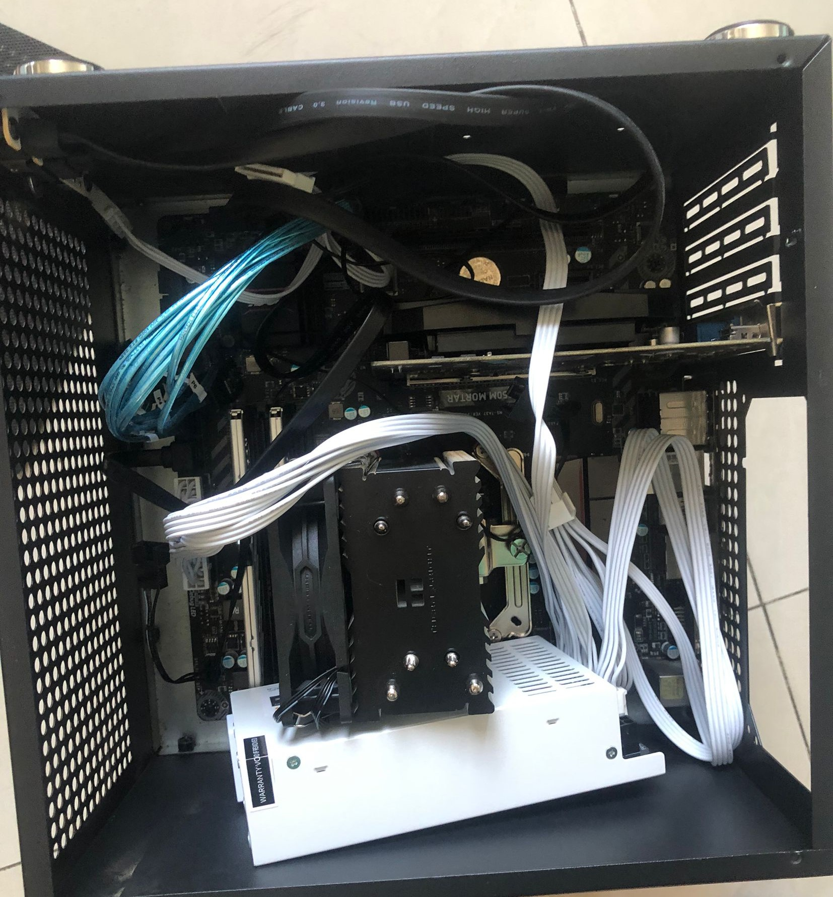
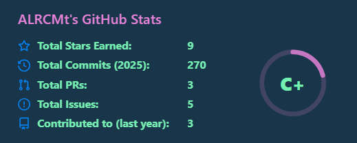
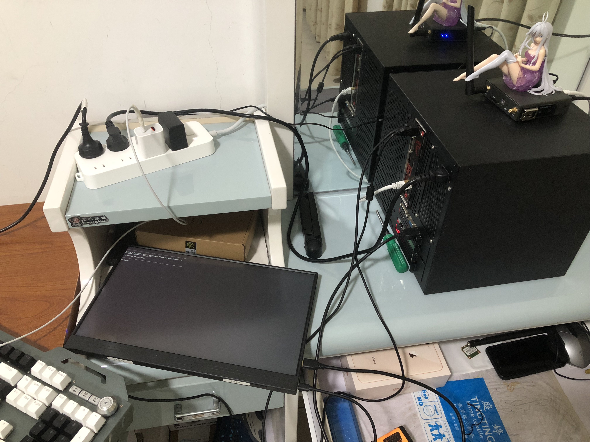
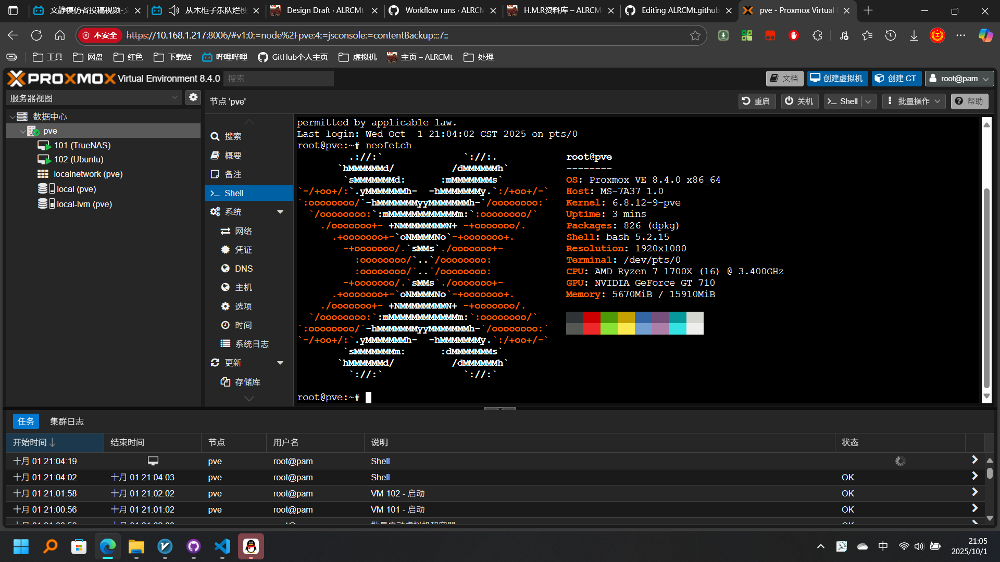

主页
ALRCMt 的个人网站！:)
| 疯狂星期四，v我50 | |
|---|---|
| 我，Mt 打钱 懂？ | |
鉴证大舞台有种你就来，没种我也来，我不过只是看着沉沦而已

沉默看书，QQ、B站、知乎、TG、X通通不辩经（哎哲逼怎么这么坏）
理科生理论水平低低低低（我看文科生也没好到哪里去）
装机入门水平，玩玩NAS、软路由，平时折腾折腾Liunx、PVE

不曾熟练掌握任何计算机语言，极不熟练使用JavaScript
无论写什么都要De一周Bug

Ctrl+C太好用了你知道吗 （哎\u{200b}怎么这么坏）
重大提示： 我不是男娘 不OD 不改花刀
装机线是不理的

代码是懒得写的（截止2025.9）

塔学造诣是没有的
成就
- H.M.R.资料库的建立（旧）
- MtAIO个人服务器的搭建
前者没有什么技术含量（实则不然），断断续续整理了两千多件社会科学资料，目前该项目正处于重开发状态
后者纯折腾折腾，看我教程应该都看得明白（是吧？），相信就连你也可以学会
-
HMR(显然服务没有开)
-
服务器外观（手办是蕾娜，随便买的便宜货）

-
服务器web
